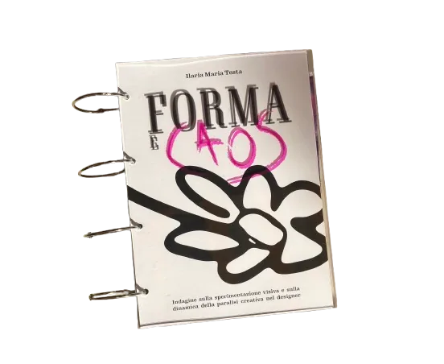
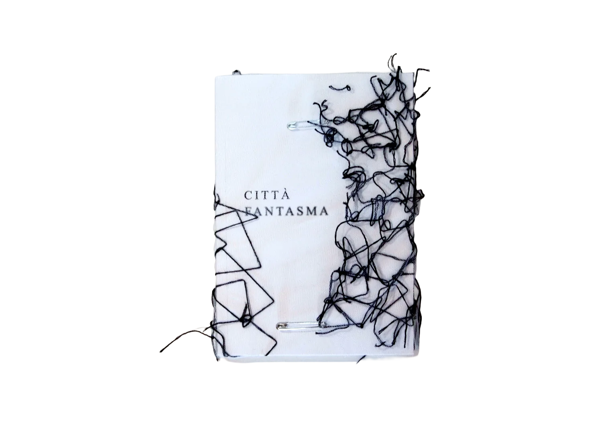
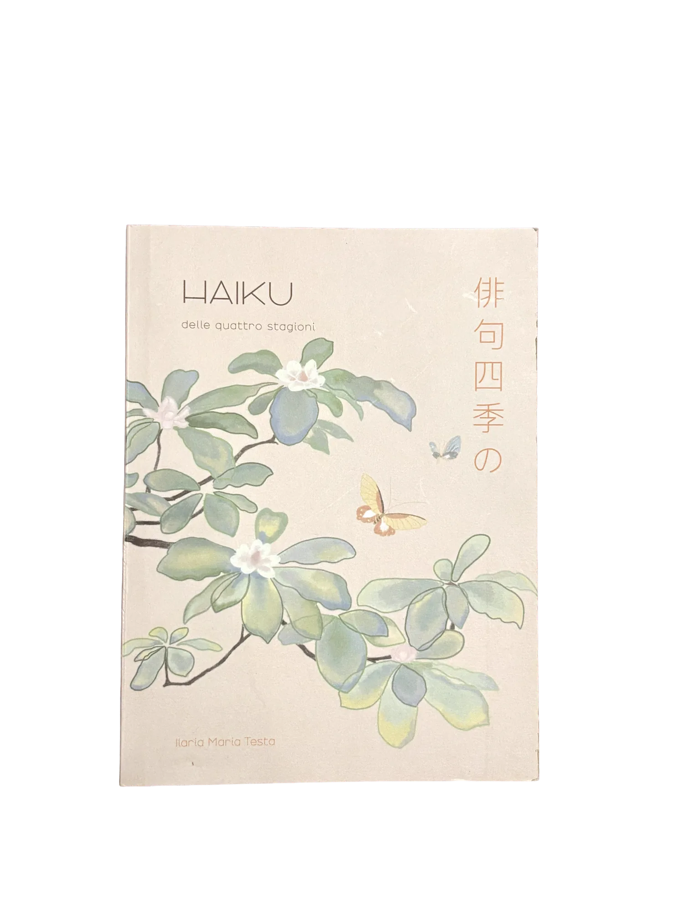
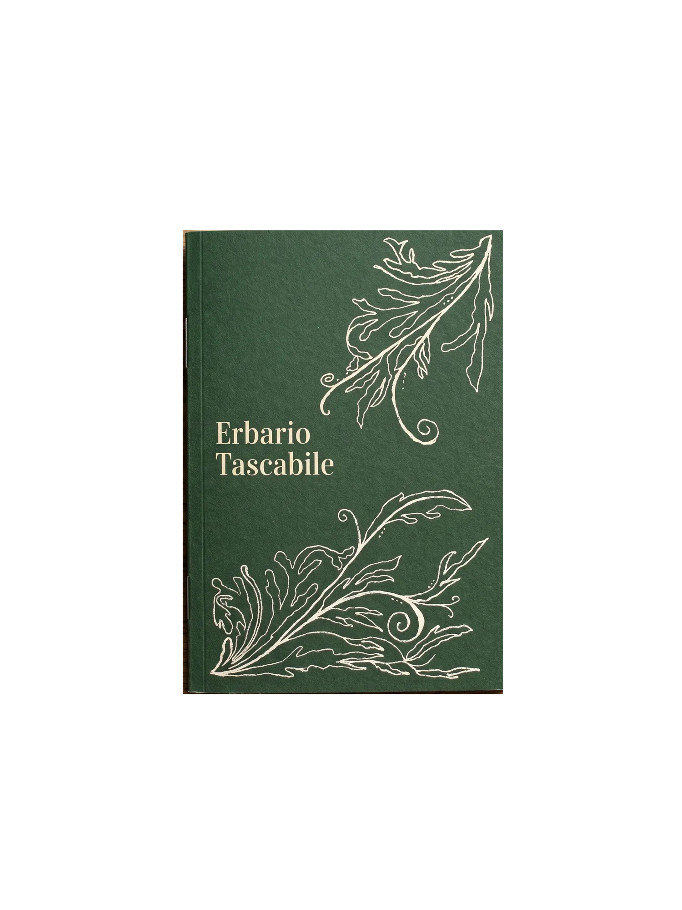
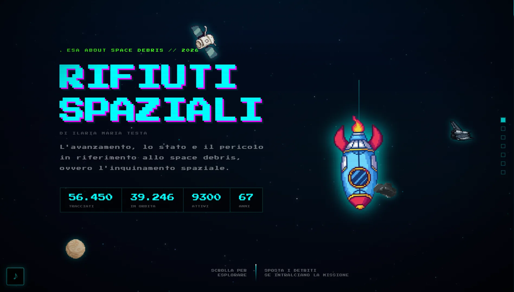
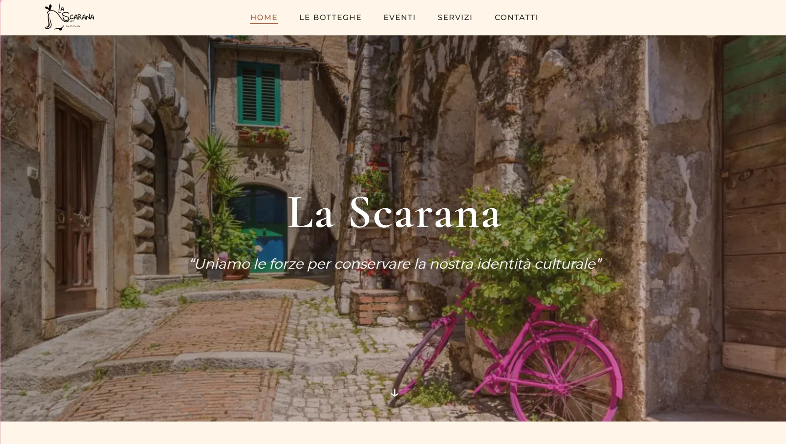
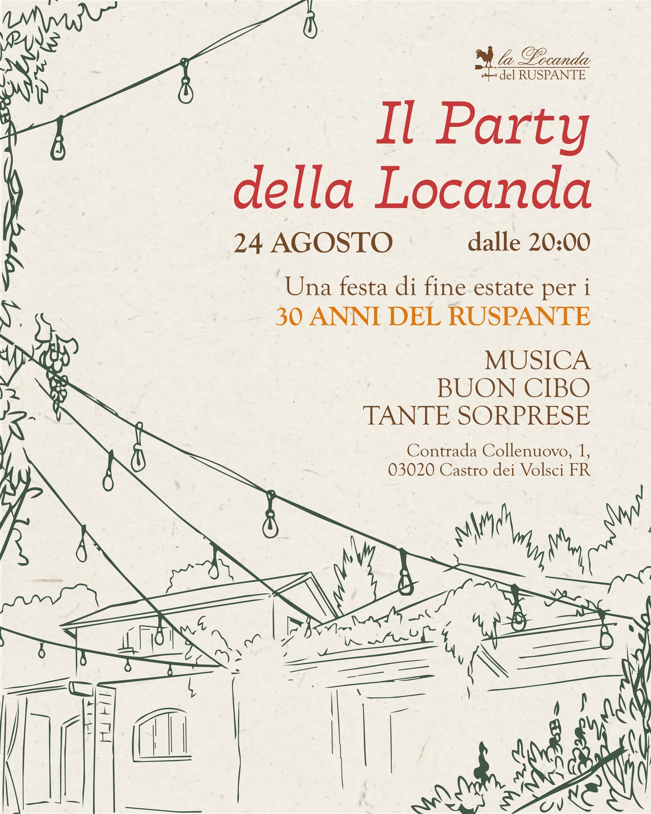
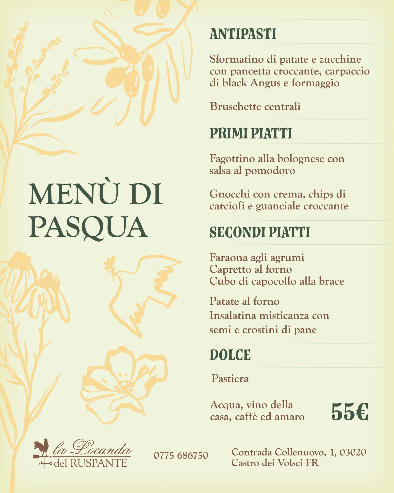
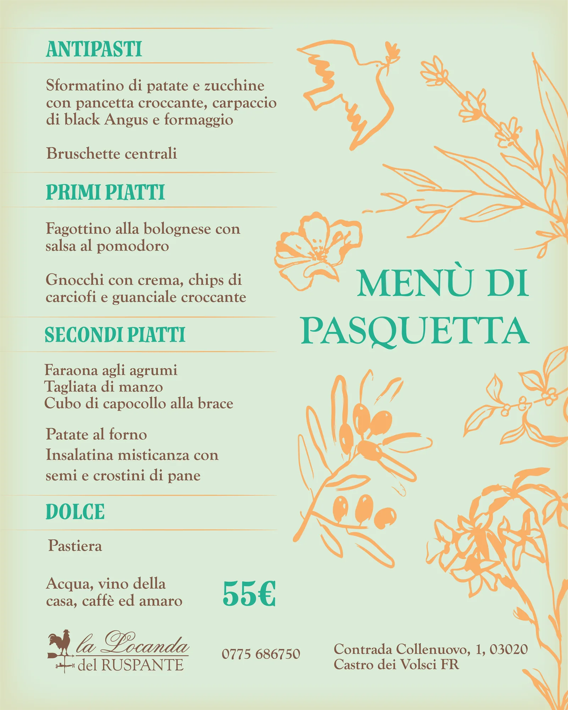

Mi occupo di progettazione grafica e visual identity, con un focus su editoria, branding e design digitale. Il mio approccio creativo si basa sull'osservazione attenta, la sperimentazione tipografica e la ricerca di soluzioni visive innovative.
Voglio che ogni progetto, dal web all'editoria, riesca a raccontare attraverso la grafica qualcosa di autentico con personalità e coerenza.
Laurea in Graphic Design
Una selezione di progetti cartacei e sperimentali di cui ho curato ogni aspetto: impaginazione, cura dei file di stampa, illustrazioni... Clicca su una copertina per aprire il volume sul tavolo da lettura e sfogliarne le pagine.




Indagine sulla sperimentazione visiva e sulla dinamica della paralisi creativa nel designer Perché sperimentare è così difficile? Vale ancora la pena farlo? Partendo da un’osservazione sulla propria pratica professionale, la tesi indaga il paradosso del designer contemporaneo che è immerso in un flusso infinito di immagini tendendo a ripiegare su soluzioni sicure, quelle che l’algoritmo ha già reso familiari. Attraverso la teoria del gioco e della creatività (Huizinga, Munari, Csíkszentmihályi), la storia delle avanguardie grafiche e la critica all’estetica del “levigato” (Han, Chayka), il lavoro individua nel vincolo autoimposto, nell’errore come risorsa e nel processo reso visibile un possibile metodo per riattivare la sperimentazione. Otto graphic designer contemporanei ne testimoniano la pratica quotidiana. Tutto ciò viene espresso poi nel progetto editoriale che vuole rappresentare la mia sperimentazione personale.
Un viaggio visivo attraverso luoghi abbandonati e memorie dimenticate. La copertina è stata rilegata con dei fili che vogliono imitare la mappa di una città, esaltando l'atmosfera spettrale e silenziosa di questi luoghi sospesi nel tempo.
Un libro diviso tra immagini evocative degli haiku divisi secondo le quattro stagioni. I colori e le composizioni seguono il ritmo degli haiku stessi. È un viaggio sensoriale che accompagna il lettore attraverso le emozioni e i paesaggi della natura, accompagnato da testi in italiano, giapponese e in kanji.
Un erbario tascabile (pocket-size) dedicato alle erbe spontanee commestibili. Ogni pianta ha la sua doppia pagina: a sinistra l'illustrazione con i dettagli di foglia, fiore e frutto, a destra la scheda con stagione, dove cercarla, sapore e usi in cucina. Un colore per ogni specie guida la lettura.
Sistemi digitali, piattaforme interattive e design di interfacce. Clicca sui mockup per esplorare i progetti live.

Interactive UI & Concept
Un sito pensato per esplorare, non solo per leggere: il tema dei rifiuti spaziali diventa un percorso interattivo in cui l'interfaccia guida lo sguardo e racconta il concept passo dopo passo. (Non ottimizzato per smartphone)

UX/UI & Web Development
Il sito di un'associazione di promozione sociale: struttura dei contenuti chiara, interfaccia semplice e uno sviluppo curato, perché attività ed eventi si trovino subito da qualsiasi dispositivo.
Una raccolta ragionata di comunicazione per clienti, marchi, ephemera, manifesti e illustrazioni narrative. Il lavoro di tutti i giorni, fuori dai grandi progetti.
Progetti accademici. Clicca o tocca un logo per vederlo a colori.


